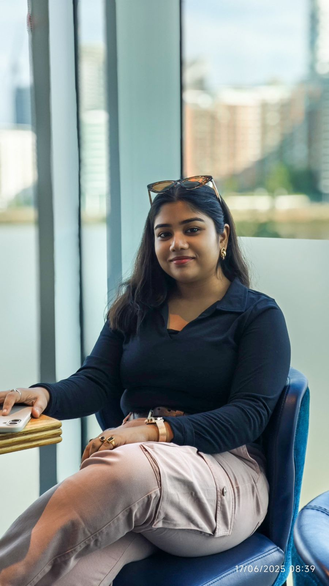

BSc Agriculture Researcher
Agriculture graduate from India passionate about bridging traditional farming with Data Science. Focusing on AI/ML to optimize crop management and solve agricultural bottlenecks.
2021 — 2025 | India
Completed intensive coursework in Soil Science, Genetics, and Plant Breeding. Specialized in field phenotyping and laboratory analysis.
2024 — Present
Transitioned into computational agriculture. Developing ML models for crop disease detection and authoring review papers on Ag-Innovation.
Developing a CNN model to identify early-stage pest damage in Paddy crops using image datasets.
Predicting soil health outcomes by integrating multispectral data with environmental sensors.